整體流程
後台選單由左到右就是工作順序。「案件匯入」讀取真實 DMS 案件，產生兩種東西：DMS 考題整理畫面、出題後直接可以考；DMS 範例設定正解後交給 AI 改寫成變化題。專員作答後，選擇題由系統計分，文字作答由 AI 先給建議、講師確認後公布成績。
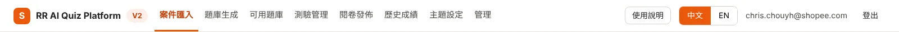
登入與角色
| 角色 | 可以做什麼 |
|---|---|
| 管理員 | 全部功能，加上「管理」：講師名單、權限設定、組別、系統設定。 |
| TW 講師 | 全部出題與測驗功能，包含案件匯入、DMS 考題審核、選範例出題、主題設定。 |
| BPO 講師 | 「題庫生成」之後的功能；看不到範例，建草稿時改用選標籤。 |
| TL | 只看「歷史成績」：每場成績、每題答對率、每位專員的作答明細，可以匯出 CSV。還沒公布的測驗也看得到（標「尚未公布」）。不能改分數、公布成績或刪除。 |
| 專員 | 不在講師名單上的人，用公司 Google 帳號登入後就是專員，只看得到「我的測驗」。 |
SeaTalk 指令（@RR AI Quiz Assistant）
| 指令 | 什麼時候用 | 做什麼 |
|---|---|---|
生成考題 D001 | 建立草稿後 | 依選的範例改寫出變化題 |
批改 E001 | 變化題測驗結束後 | 為文字答案評分，附理由與信心度 |
批改 X001 | DMS 考題測驗結束後（有簡答題時） | 為簡答題給 AI 建議分數；講師採用並儲存才算數 |
指令在網站上都有「複製」按鈕。AI 處理時不用重新整理，完成後畫面會自動更新。
畫面上的圖示
- 3 灰色圓圈：待處理的數量，例如待審、待給分。
- 2 橘色圓圈：需要注意的數量，例如 AI 低信心、需要留意。
- ✓ 綠勾：這一項都完成了。
- ↻ 重新整理這一頁的資料。編輯頁、設定頁、作答頁沒有這個按鈕，避免洗掉還沒存的內容。
英文翻譯
講師只寫中文。DMS 考題設成「TW＋BPO」並上架後，排程會用 DMS 的翻譯服務把案件內容和講師寫的字翻成英文；變化題則在改了中文後按 送翻譯。講師寫的字可以到「英文對照」確認或修改（見 DMS 考題一節）。
案件匯入 TW 講師
輸入 Return ID，排程會自動讀取 DMS 案件。可以匯入成 DMS 考題（原案件直接考）或 DMS 範例（交給 AI 出變化題），兩個可以都勾。
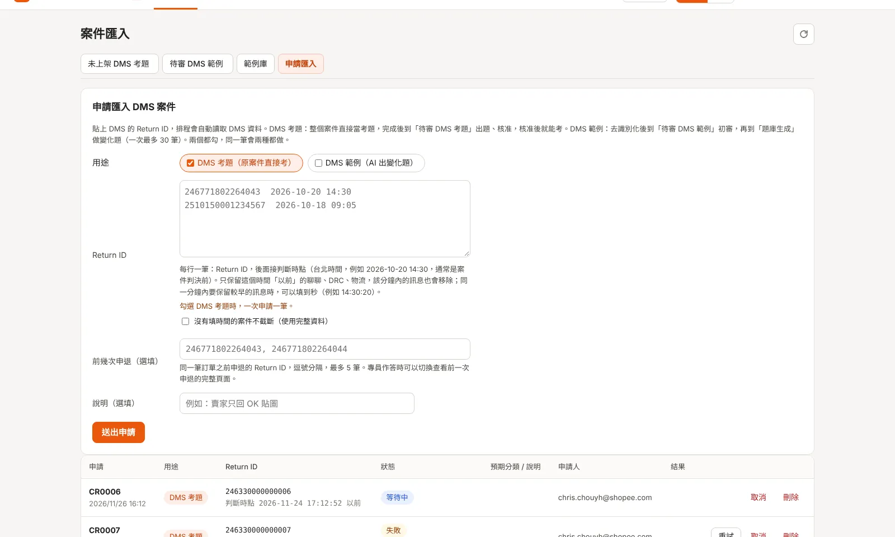
- 四個分頁未上架 DMS 考題、待審 DMS 範例、範例庫、申請匯入。分頁旁的數字是待處理數量。
- 用途DMS 考題（預設）或 DMS 範例，可以都勾。勾 DMS 考題時一次只能申請一筆。
- Return ID 與判斷時點一行一筆，Return ID 後面空一格接判斷時點（台北時間），例如
246771802264043 2026-10-29 13:24。聊聊、DRC、Operation History、Timeline 只保留這個時間以前的內容，該分鐘內的也會移除；要保留同一分鐘較早的訊息時可以填到秒。 - 不截斷沒有填時間的案件要勾這個，才會使用完整資料。
- 前幾次申退（選填）同一筆訂單之前的 Return ID，用逗號分隔，最多 5 筆。專員作答時可以切換查看。
- 送出申請排程定時處理，完成後在 SeaTalk 通知，案件會出現在對應的分頁。匯入時不做 AI 判斷、不翻譯。
- 申請紀錄每筆申請的狀態。處理中超過 15 分鐘會出現「重試」；等待中或失敗的可以取消。
審核 DMS 範例
在「待審 DMS 範例」點範例進入。範例的畫面照 DMS 呈現，上方依序列出要處理的 5 步，做完的步驟會打勾。
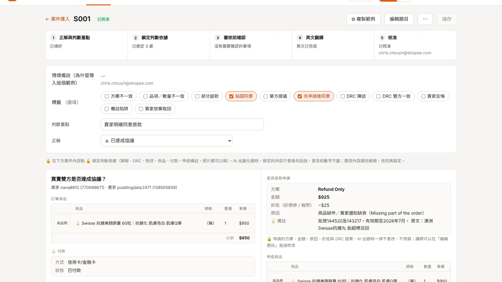
- 審核進度 5 步① 正解與判斷重點 ② 鎖定判斷依據 ③ 審核前確認 ④ 英文翻譯 ⑤ 核准。第 1、3、4 步完成並儲存後才能核准。
- 複製範例、編輯題目「複製範例」複製成新的待審範例（鎖定一起複製），用來改出另一個版本；「編輯題目」讓案件畫面原地可以修改。退回、刪除收在「⋯」裡。
- 標籤這個範例的判斷重點分類，出題、篩選時會用到。
- 判斷重點一句話寫出這題的關鍵，也用來區分範例。
- 正解選這個範例的正確答案。AI 改寫時一律沿用，不會更動。
- 鎖定判斷依據在案件內容點鎖頭，鎖定決定答案的部分（聊聊、DRC、物流、商品、付款、申退備註、照片都可以鎖）。AI 改寫時，鎖定的內容只會換句話說，意思和數字不變。
- 編輯題目：可以改文字、時間、說話者，插入、刪除、上下移動訊息，新增商品、物流事件、照片。已鎖定的部分要先解鎖。按「儲存」存檔，「取消」全部還原；離開頁面不會提醒，未儲存的修改會直接放棄。
- 照片、影片、貼圖可以填描述（例如「外箱破損、內容物完好」），影響判斷時再填。
- DMS 規則：申退原因與申請方案的組合（例如 Damaged item 只能 Return and Refund）會自動檢查，規則在「主題設定 → DMS 規則」。
- 沒有鎖定的範例也能核准，但不能拿來選範例出題。範例庫裡的範例可以從「⋯」停用。
DMS 考題審核與出題 TW 講師
在「案件匯入 → 未上架 DMS 考題」點案件進入編輯頁。左邊和中間是 DMS 畫面，右邊「考題」分頁放題目。上架後出現在「可用題庫 → DMS 考題」，就能拿去組卷。
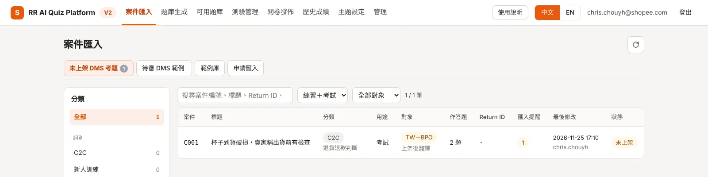
整理案件畫面
修改會自動儲存，右上角的復原、重做可以退回上一步。
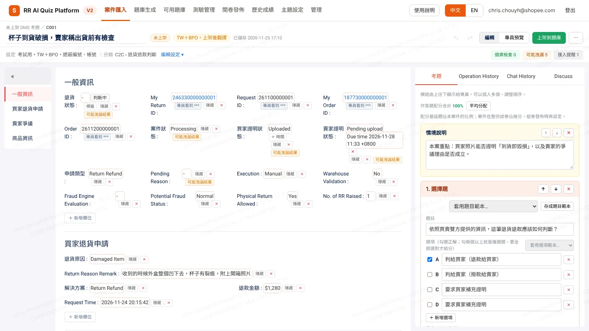
- 編輯／專員預覽切換講師的編輯畫面和專員實際看到的畫面。
- 上架到題庫檢查都通過、作答題配分合計 100% 才能上架。上架後要改內容，先從「⋯」選「下架修改」。
- 案件設定點「編輯設定」展開：用途（練習／考試）、使用對象（TW，或 TW＋BPO 會翻成英文）、遮蔽編號與帳號、組別、主題、標籤。考試只能放考試用的案件，避免專員在練習時先看過。
- 上架前檢查個資檢查、可能洩漏、匯入提醒的數量，點下去會跳到該欄位。
- 區塊導覽跟 DMS 左側一樣，點了會捲到該區塊。
- 欄位工具「隱藏」讓專員看不到這個欄位（位置保留空白）；「✕」刪除欄位。值可以直接點進去修改，「＋ 新增欄位」可以補上 DMS 沒有的資訊。
- 專員看到 ***Return ID、帳號這類可以查到原案件的欄位，預設遮蔽，專員畫面顯示 ***。
- 可能洩漏結果這個欄位可能透露案件最後怎麼判（例如 Case Status），請確認要不要隱藏。上架時還有專員看得到的，會再提醒一次。
- 考題分頁在這裡插入情境說明、補充資訊、選擇題、簡答題、SOP 路徑，並設定配分。旁邊三個分頁和 DMS 一樣。
專員預覽
按「專員預覽」，畫面會換成專員作答時看到的樣子：編號變成 ***、隱藏的欄位消失、欄位翻成中文。可以實際作答、按「交卷看結果」試算，不會留下紀錄。右上角切到 EN 就是 BPO 專員看到的英文畫面。
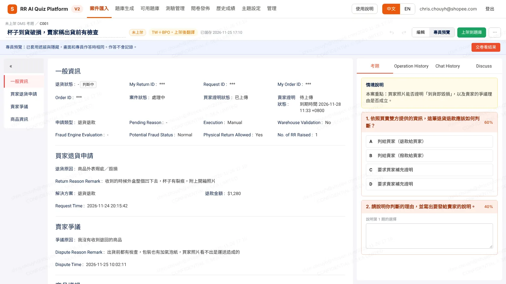
插入考題
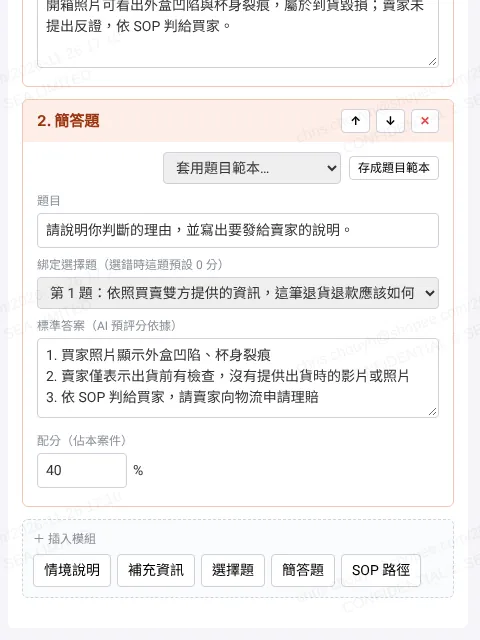
- 套用題目範本直接帶入「主題設定 → 題目範本」的題目與選項，英文用範本寫好的，不經過翻譯。
- 存成題目範本把寫好的題目存成範本，給之後的案件用。
- 綁定選擇題簡答題可以綁定一題選擇題：專員寫的是「為什麼選這個答案」，批改時會一起看到他選了什麼。
- 標準答案簡答題必填，AI 會照它批改，請寫出判斷的關鍵。
- 配分這一題佔本案件的百分比，同一個案件的作答題加起來要 100%。
- 插入模組情境說明（黃底文字）、補充資訊（講師上傳的圖片）、選擇題（2–10 個選項，勾兩個以上就是複選）、簡答題、SOP 路徑。模組由上往下顯示，可以調整順序。
案件在整份試卷佔幾分，發佈測驗時再設定（見「測驗管理」）。
題目範本
常用的固定題目，先在「主題設定 → 題目範本」寫好中英文，出題時直接套用。範本只有題目和選項，不含正解與詳解。
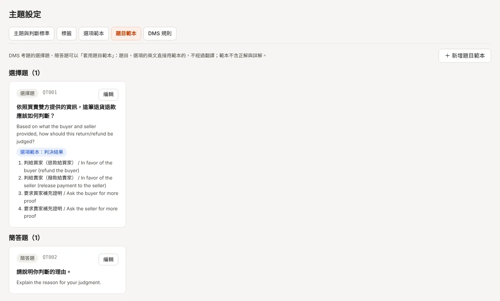
- 題目範本分頁和選項範本、標籤放在一起。
- 新增題目範本選題型（選擇題或簡答題），填中文和英文題目。
- 搭配選項範本選擇題可以直接引用一組選項範本；選項範本改了，題目範本會跟著更新。
- 範本卡片中英文題目、選項一次看完，按「編輯」修改。已經套用到案件的題目不受影響。
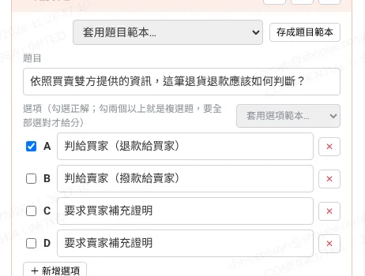
- 套用題目範本選一個範本，題目和選項換成範本的內容（會先詢問是否取代）。
- 存成題目範本把這一題存成新範本。
- 套用選項範本只換選項，題目保留自己寫的。
- 勾選正解範本不含正解，套用後要自己勾。
上架與英文對照
- 上架前要有標題、組別、主題，至少一題，每題要有題目、配分（合計 100%），以及正解或標準答案；缺什麼畫面會列出來。
- 已上架的案件不能直接修改，要先按「⋯ → 下架修改」，改完再上架。下架期間不能拿來組卷。
- 同一筆 DMS 案件想出成兩份不同的考題：用「⋯ → 複製」。內容、題目、補充資訊圖片都會複製一份，兩個案件之後互不影響。
- TW＋BPO 的案件上架後由排程翻成英文。翻譯完成後，標題旁會出現「英文未確認 N 句」，點下去（或「⋯ → 英文對照」）打開下面的表。
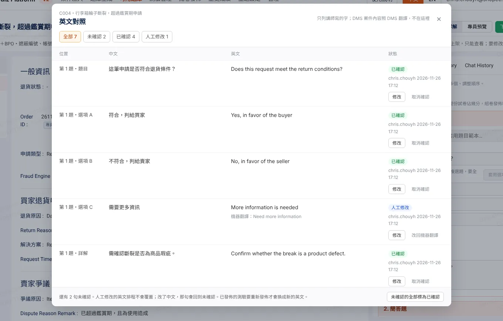
- 篩選全部、未確認、已確認、人工修改。
- 中文只列講師寫的字：情境說明、題目、選項、詳解、參考答案。DMS 案件內容用 DMS 的翻譯，不在這裡。
- 英文機器翻譯的結果；人工修改的會在下方灰字保留原本的機器翻譯。
- 確認／修改翻得好就按「確認」，不好就按「修改」寫自己的英文。人工修改的英文排程不會覆蓋；改了中文，那一句會回到未確認。
- 全部標為已確認看過沒問題時，一次確認全部未確認的句子。
題庫生成（變化題）
選幾個範例，請 AI 把每個範例改寫成數題變化題。正解直接沿用範例，講師只要確認內容沒有走樣，再加入題庫。
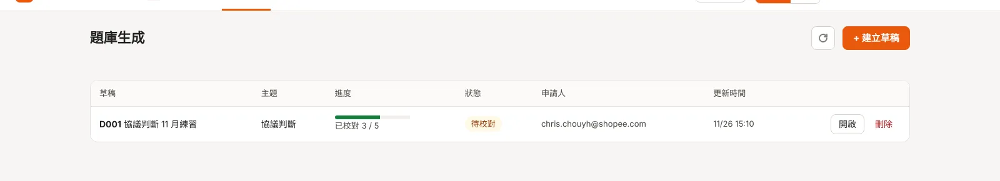
- 按 ＋ 建立草稿：填名稱、選主題，勾選要用的範例並填題數（每個範例預設 5 題）。只能選已核准、而且有鎖定的範例；表格會顯示每個範例的判斷重點、正解、鎖定數，以及題庫已有幾題來自它。
- 按 複製指令，到 SeaTalk 傳
生成考題 D00x。草稿的進度會自動更新。 - AI 改寫的規則（不符合會整批退回重寫）：可以改帳號、商品名稱、沒鎖定的訊息；鎖定的訊息只能換句話說；申請內容、DRC 提案、蝦皮訊息、照片、數量與單價不能改。金額會同比例換算，日期一起挪 7–45 天。
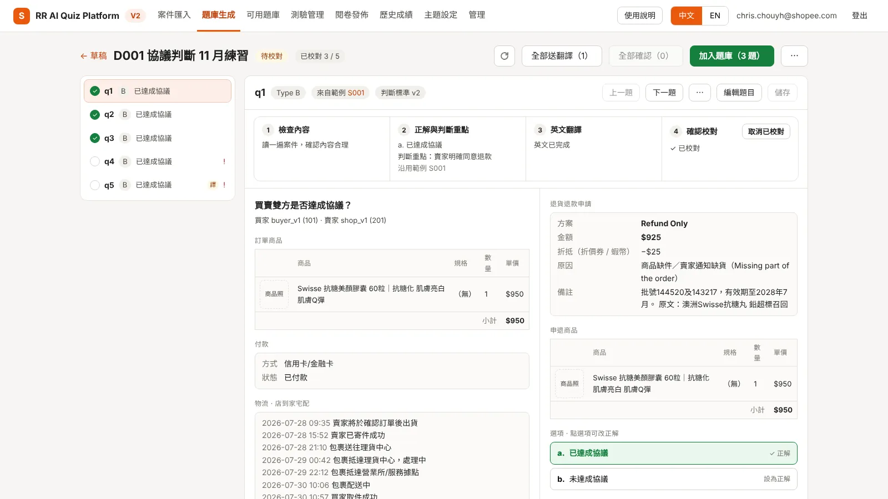
- 題目清單綠勾＝已校對；驚嘆號＝有待處理的事（例如英文待翻譯）。
- 每題 4 步① 檢查內容（來自鎖定的內容會標出）② 正解與判斷重點（沿用範例）③ 英文翻譯 ④ 確認校對。
- 編輯題目原地修改，和範例頁相同。刪除這題在「⋯」裡。
- 全部送翻譯一次送出所有英文待翻譯的題目。
- 全部確認把可以確認的題目一次標為已校對（略過格式錯誤、英文待翻譯的）。建議先抽看幾題。
- 加入題庫已校對的題目加入題庫。英文待翻譯或格式錯誤的不能入庫。
- 正解綠色是正解。內容改寫後不再支持正解時，修改內容或刪除這題。
可用題庫
所有可以拿來出測驗的題目，分成 變化題 和 DMS 考題 兩個分頁。
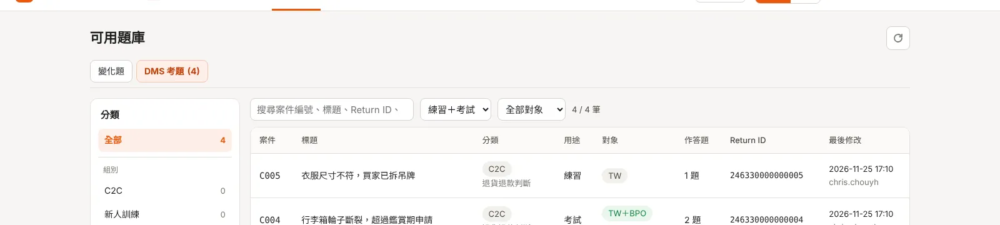
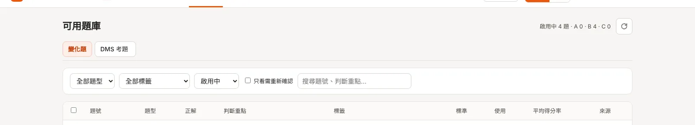
- 點開變化題按 編輯題目 可以修改，版本號會增加；已發佈的測驗保留當時的版本。
- 改了中文的題目標示「英文待翻譯」，翻好之前不能放進新的試卷。
- 同一份試卷不會放同一個範例的兩題變化題。
- 題目過時按 停用；判斷標準更新後，舊題目標示「需重新確認」，自動抽題預設不會選到。
- 有刪除權限的講師（預設只有管理員）可以刪除題目，已發佈的測驗不受影響。
測驗管理
按 ＋ 新增測驗，先選要用哪種題目，再填表發佈。
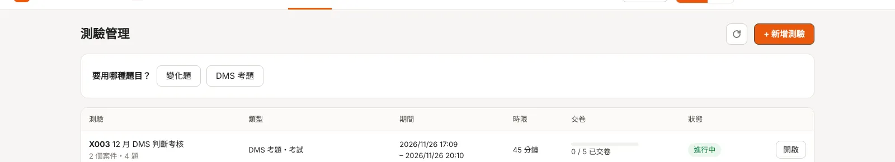
發佈 DMS 考題測驗
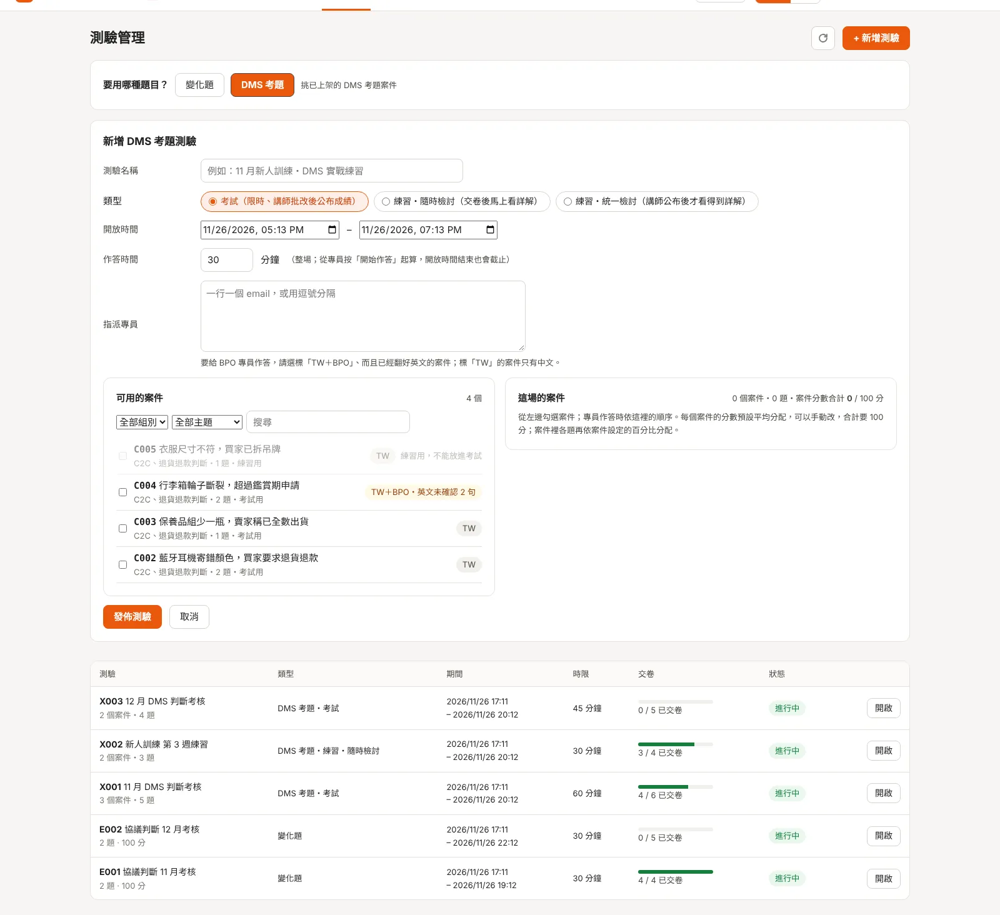
- 題目種類選「DMS 考題」。
- 測驗名稱專員在「我的測驗」看到的名稱。
- 類型考試（講師公布成績後才看得到分數與詳解）、練習・隨時檢討（交卷後馬上看到正解）、練習・統一檢討（講師公布解答後才看得到）。
- 開放時間、作答時間開放時間內都可以開始；作答時間從專員按「開始作答」起算，開放時間結束也會截止。
- 指派專員一行一個 Email，可以直接從 Excel 貼上。給 BPO 專員作答時，請選「TW＋BPO」而且已經翻好英文的案件。
- 可用的案件勾選要考的案件，考試只能挑考試用的案件。「N 人做過」只是提醒，不會擋。
- 選進的案件可以調整順序（每場最多 20 個），每個案件旁填這個案件佔幾分：預設平均分配，合計要 100 分；按「均分」恢復平均。
- 發佈測驗發佈後到單場頁複製專員連結傳給專員；專員登入後也會在「我的測驗」看到。
DMS 考題測驗的單場頁
分頁照測驗的階段排，打開時會停在對應的分頁：尚未開始→考題內容、進行中→作答進度、已結束→閱卷批改。
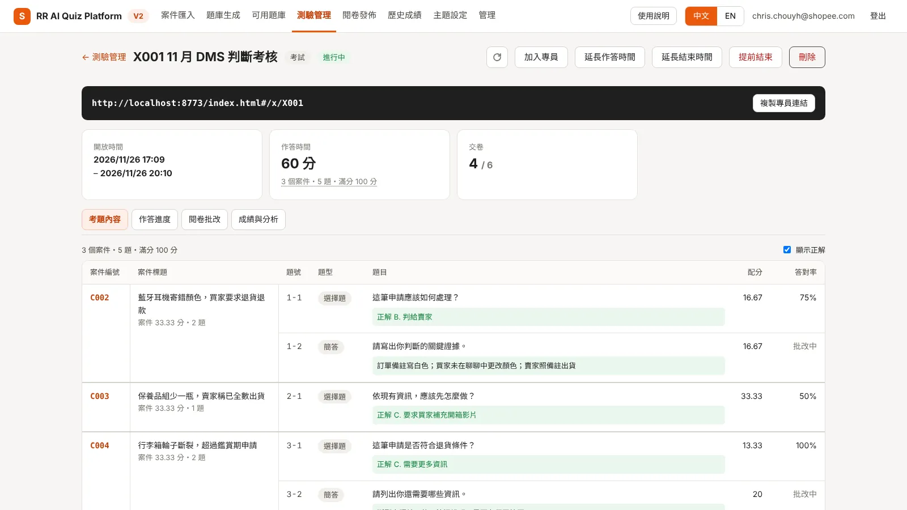
- 測驗操作加入專員；延長作答時間（整場加長）；延長結束時間（提前結束後也能重新開放）；提前結束（作答中的人會自動交卷）；刪除只用來清除測試測驗。
- 複製專員連結把連結傳給專員。
- 測驗摘要開放時間、作答時間、交卷人數。
- 四個分頁考題內容、作答進度、閱卷批改、成績與分析。
- 顯示正解勾了才顯示正解與參考答案，避免投影時被看到。
- 案件編號點了會在新分頁打開這個案件（目前的內容）。
- 答對率交卷的人裡答對的比例，低於 50% 標橘色；簡答題以已給分的人計算。
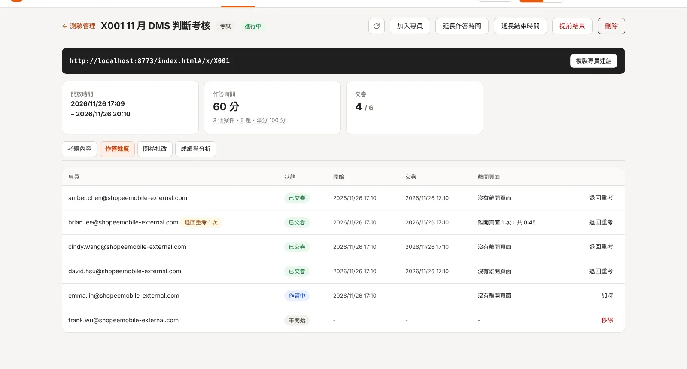
- 作答進度每位專員的狀態：未開始、作答中、已交卷、逾時未交。
- 退回重考 N 次被退回過的專員會標出次數，講師和 TL 都看得到。
- 離開頁面作答時離開考試頁面的次數與時間。
- 退回重考已交卷或逾時未交的專員才有。預設只有管理員可以用，見下方說明。
- 加時只給某一位專員加時間，例如網路斷線、電腦當機。
- 移除還沒開始的專員可以移除。
退回重考
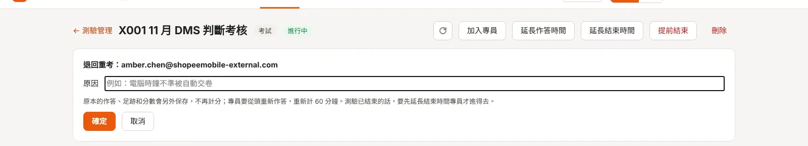
- 例如專員誤交卷、交卷時網路中斷。原因必填，退回紀錄（誰、何時、原因）會在作答進度、成績頁、專員歷程顯示「退回重考 N 次」。
- 原本的作答、足跡和分數另外保存、不再計分；專員從頭重新作答、重新計時。
- 成績已公布要先取消公布；測驗已結束要先延長結束時間，專員才進得去。
- 預設只有管理員可以退回，要開放給講師請到「管理 → 權限設定」勾選。
發佈變化題測驗
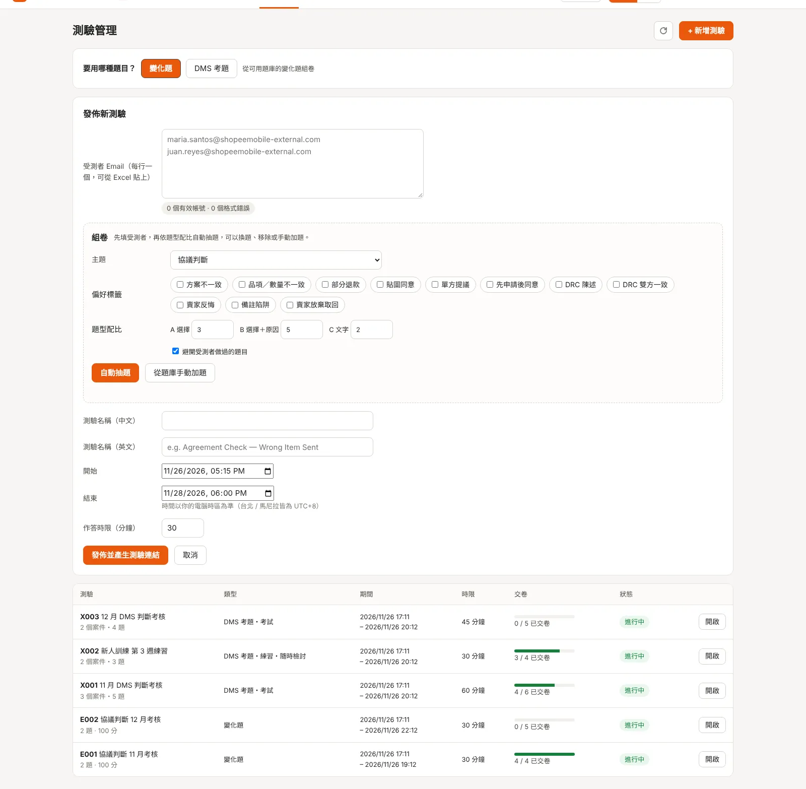
- 變化題測驗的單場頁可以看每位專員的狀態，以專員畫面預覽 看專員實際看到的畫面。
- 開始時間由伺服器記錄，專員無法透過改電腦時間延長作答。
- 有刪除權限的講師（預設只有管理員）可以刪除測驗（只用來清除測試測驗）；正式測驗請用公布成績後的「封存」。
閱卷發佈
測驗結束後，選擇題由系統計分，簡答題（文字答案）由 AI 先給建議，講師給分後公布成績。「閱卷發佈」列出已結束的測驗。
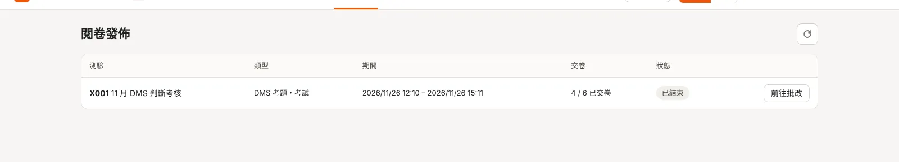
DMS 考題測驗：依題目批改
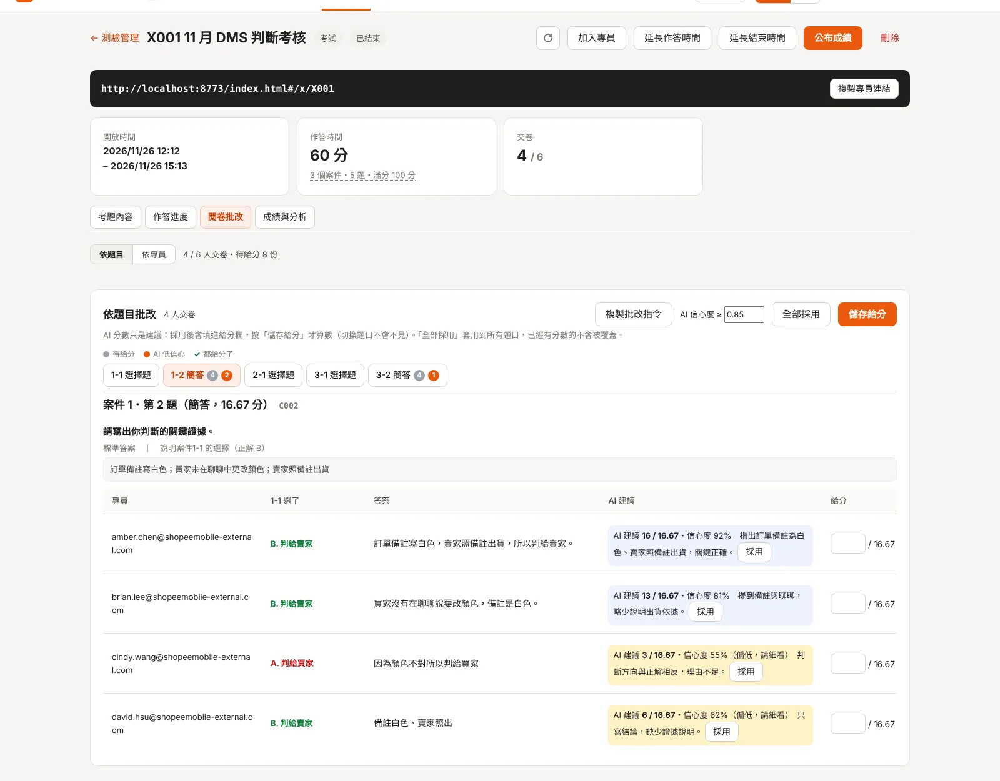
- 依題目／依專員依題目：一題一題給分；依專員：一位專員看完所有題目。
- 題目分頁每一題一個分頁。灰色數字＝待給分人數，橘色＝AI 低信心人數，綠勾＝都給分了。
- 複製批改指令到 SeaTalk 傳
批改 X00x，AI 建議會自動出現在每個答案旁。 - 依信心度全部採用把信心度達到門檻的 AI 分數填進給分欄（套用到所有題目，只填空白的欄位）。
- AI 建議分數、信心度、理由。信心度低於 70% 是黃底，請優先檢查；按「採用」填進給分欄。
- 給分直接填實際分數（案件分數 × 題目百分比）。
- 儲存給分AI 分數只是建議，按這裡儲存才算數。可以切換題目後一起儲存；沒儲存就離開會提醒。
- 標準答案出題時寫的標準答案；綁定選擇題的簡答會顯示對應的正解。
- 公布成績都給完分後按這裡。還沒給分的簡答以 0 分計算。公布後專員看得到分數、正解與詳解。
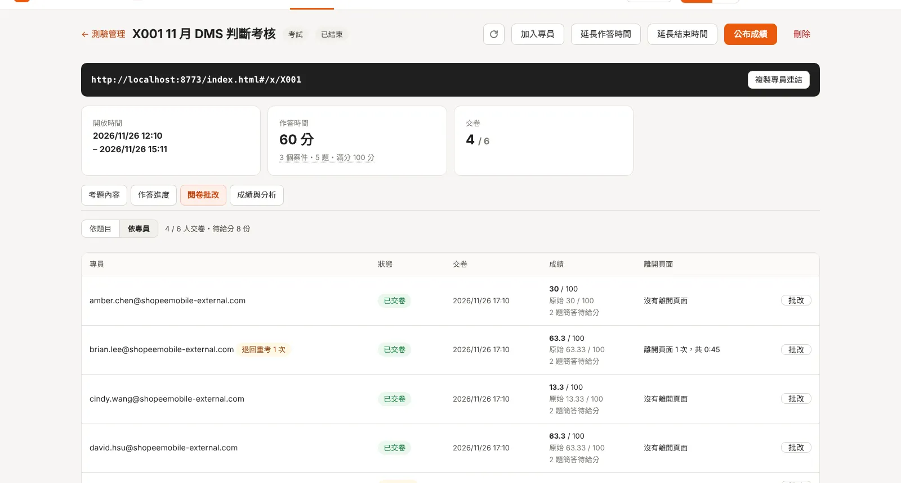
變化題測驗
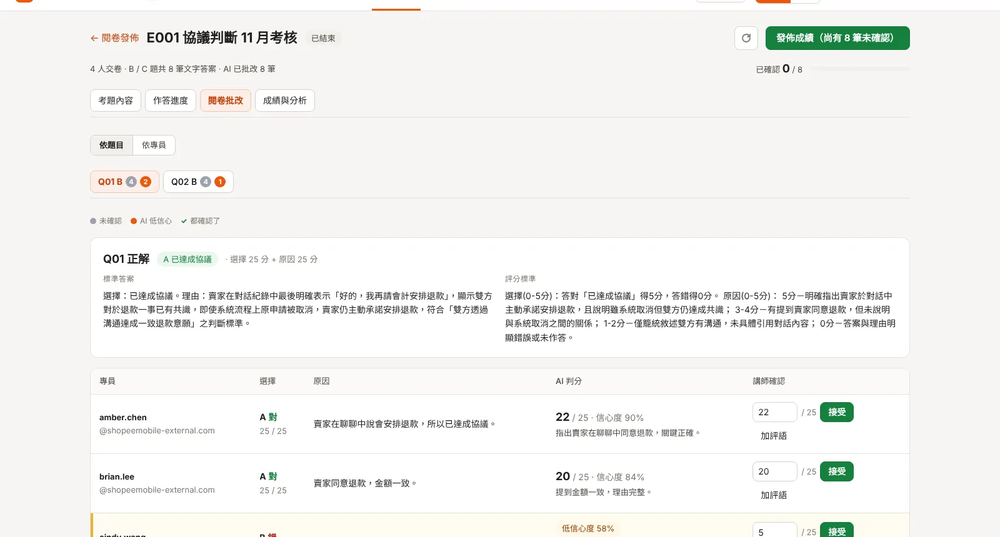
- 題目分頁只列有文字作答的題目（B、C 題）。
- 正解與評分標準AI 依這裡和主題的「批改原則」評分。
- AI 判分分數、信心度、理由；低信心的整列標黃。
- 講師確認接受 AI 分數或改成講師分數，可以加評語。
- 發佈成績未確認的答案會直接使用 AI 分數。
- 先到 SeaTalk 傳
批改 E00x，AI 分數會自動出現。 - 覺得 AI 給分太嚴或太鬆：先調整主題的 批改原則，再重新批改本題未確認的分數。已確認的不受影響。
- 公布後發現給錯分仍可修改，專員的成績會自動更新；必要時可以取消公布。公布後可以「封存」，從列表隱藏。
歷史成績
查看每場測驗與每位專員的表現。還沒公布的測驗也看得到目前的分數。
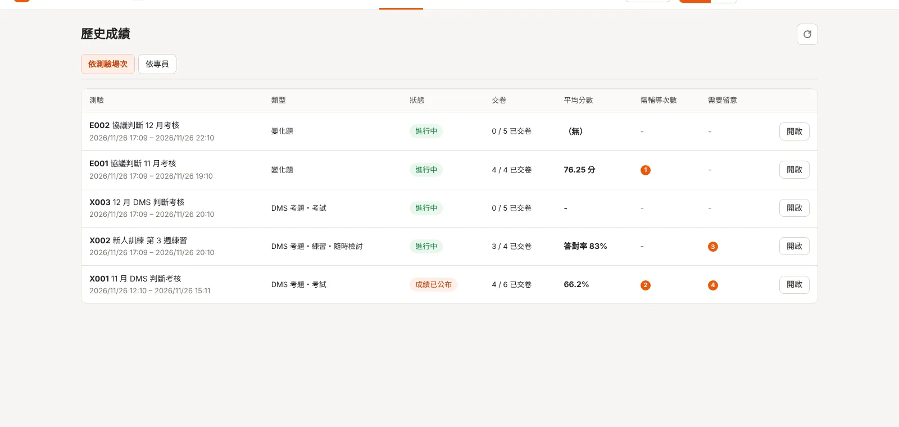
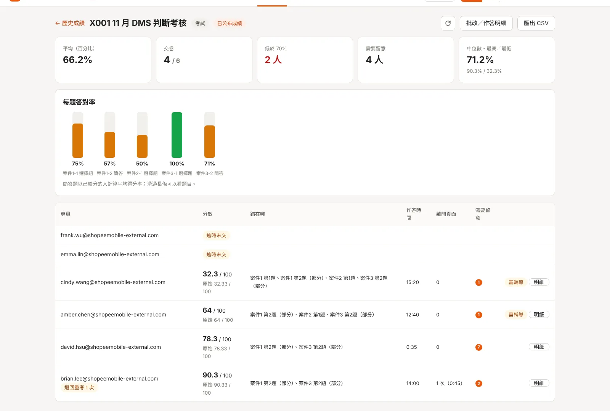
- 明細與匯出「批改／作答明細」回到單場頁；「匯出 CSV」下載每位專員的分數與錯在哪。
- 統計平均、交卷人數、低於輔導門檻、需要留意、中位數與最高最低分。
- 每題答對率一題一條，滑過長條可以看題目。
- 錯在哪答錯或只拿部分分數的題目。
- 需要留意依作答足跡標示，見下方說明。
- 需輔導分數低於輔導門檻。
- 退回重考紀錄被退回過的專員會標出次數。
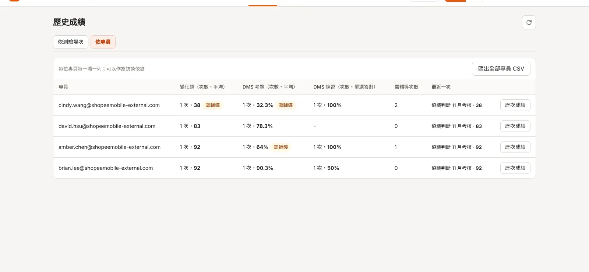
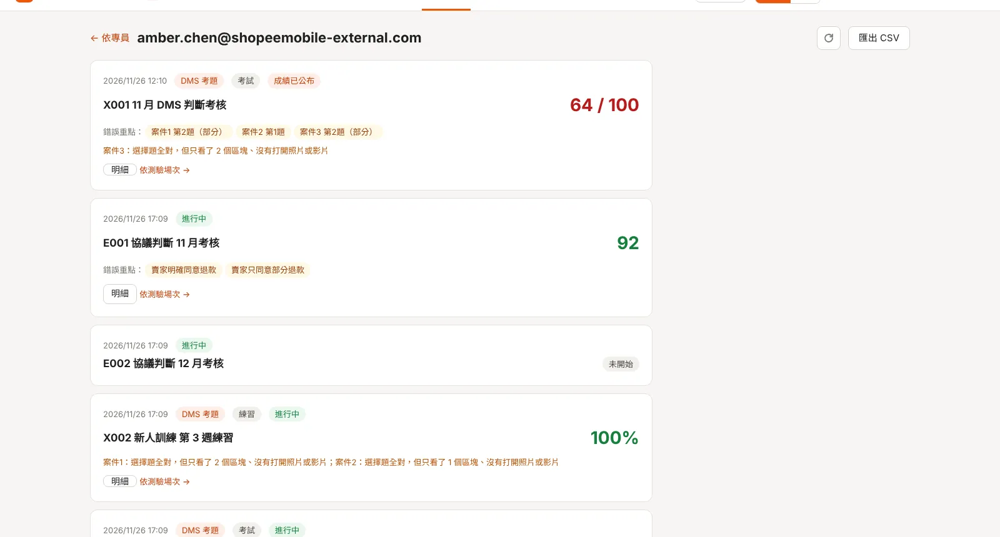
作答足跡與「需要留意」
DMS 考題測驗會記錄每個案件看了多久、看了哪些區塊和分頁、打開哪些照片與影片、離開考試頁面的時間，以及簡答貼上的字數。專員作答畫面上有告知。這些情況會標示 需要留意：
- 一個案件看不到 60 秒就作答。
- 選擇題全對，但只看了 2 個以內的區塊、沒有打開照片或影片。
- 離開考試頁面 20 秒以上，回來 30 秒內就作答。
- 簡答題貼上 30 字以上。
「需要留意」只是提示，不代表作弊，請搭配作答內容一起判斷。
TL 看到的畫面
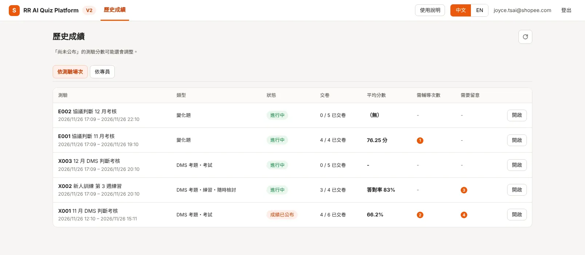
主題設定與管理
「主題設定」只有 TW 講師看得到；「管理」只有管理員看得到。
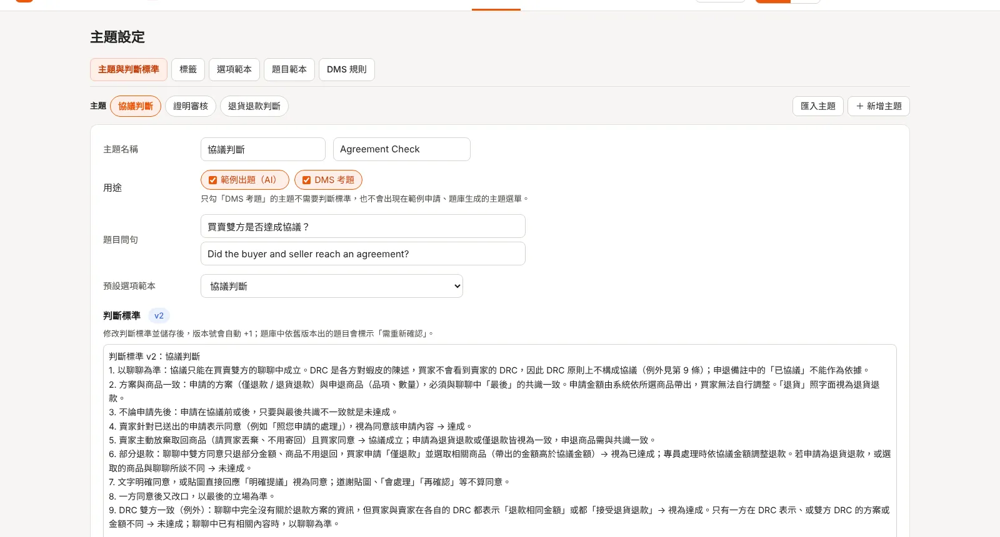
| 分頁 | 內容 |
|---|---|
| 標籤 | 各主題的判斷重點分類；停用後不再出現在選項中，已使用的範例與題目不受影響。 |
| 選項範本 | 常用的選項組合（中英文），出題時套用，也可以被題目範本引用。 |
| 題目範本 | DMS 考題常用的題目與選項（見 DMS 考題一節）。 |
| DMS 規則 | 申退原因 × 允許的申請方案，以及其他系統規則文字。出題、匯入範例、存檔時都會檢查。 |
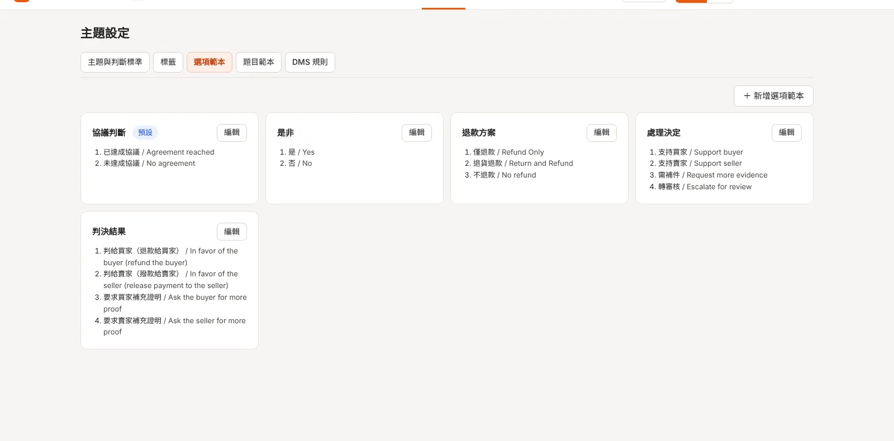
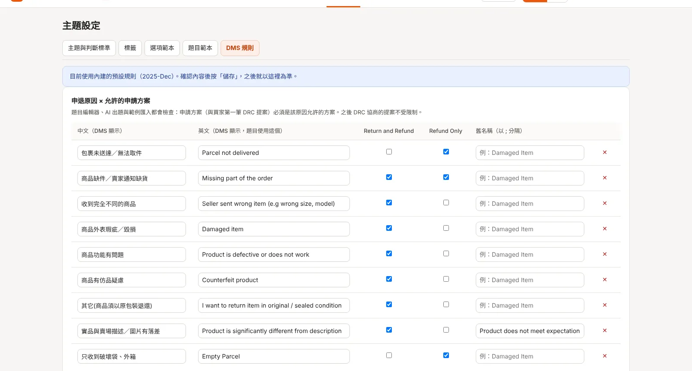
管理 管理員
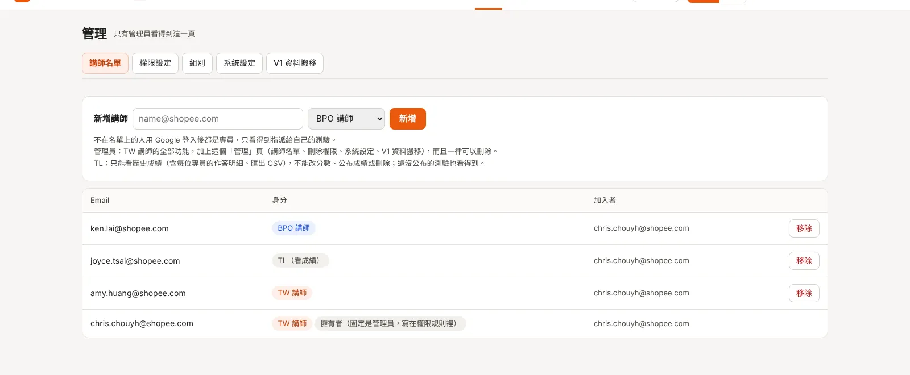
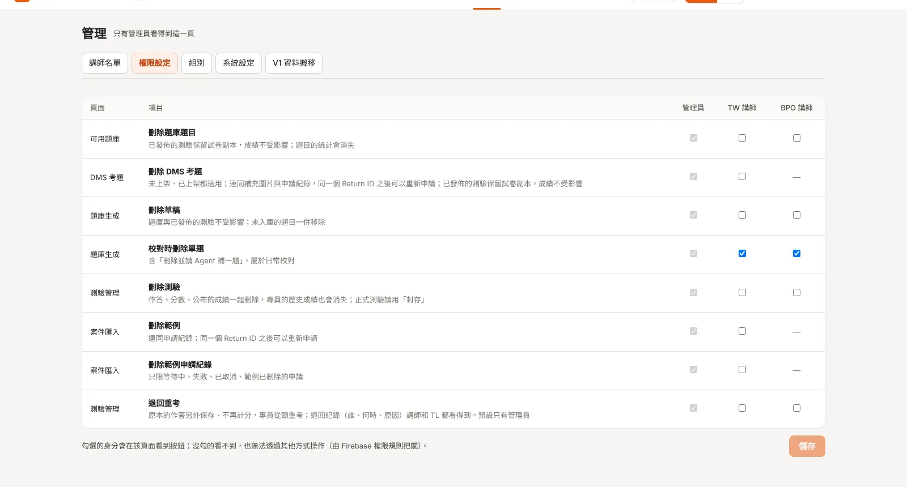
| 分頁 | 內容 |
|---|---|
| 組別 | DMS 考題的組別（C2C、新人訓練、Mall、CB、Review）。 |
| 系統設定 | 每批生成題數、AI 低信心門檻、輔導門檻、自動交卷緩衝、每份試卷最多題數等。 |
| V1 資料搬移 | 匯入舊平台的資料（只能一次）。 |
注意事項
- 資料安全：範例和變化題都經過去識別化，存檔時也會自動掃描疑似訂單編號、電話、Email。審核時發現殘留請直接刪改。
- DMS 考題的資料：DMS 考題用真實案件與照片、影片，不做去識別化；可以查到原案件的欄位預設遮蔽成 ***。專員要在公司內網或 VPN 才看得到照片與影片。Return ID、帳號只有 TW 講師看得到。
- 英文：講師只寫中文；DMS 考題上架後由排程翻譯，變化題改了中文後按「送翻譯」。翻譯中的範例或題目不能修改。
- 舊版連結：舊平台（V1）的資料已搬到這裡，舊的測驗連結會自動導到新編號。
- 問題回報：使用上有任何問題或建議，請聯絡 Chris。